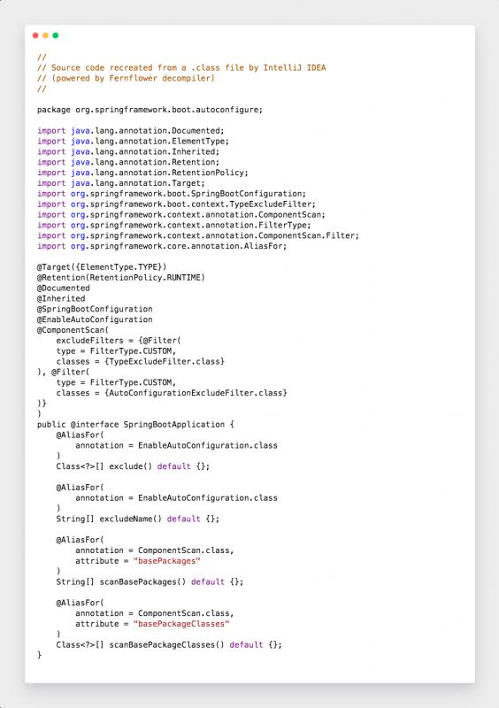
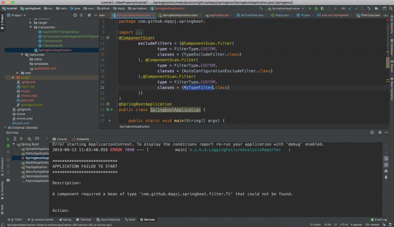
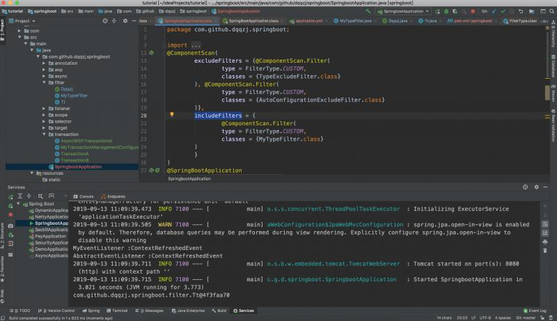

在平常的开发中，不知道大家有没有想过这样一个问题，为什么我们自定义注解的时候要使用spring的原生注解（这里指的是类似@Component，@Service........）,要么就是 随便弄个注解，搭配自己的切面编程来实现某些业务逻辑。这篇文章主要给大家分享一下，如何脱离Spring原生注解自定义注解注入IOC

从源代码很容易看出来，它的作用就是自动装配和扫描我们的包，并将符合的类进行注册到容器。自动装配非常简单，这里不做过多分析，接下来分析一下什么叫做符合规则的类。在@ComponentScan注解上面的过滤器类型的定义
public enum FilterType {
ANNOTATION, //注解类型
ASSIGNABLE_TYPE, //指定的类型
ASPECTJ, //按照Aspectj的表达式，基本上不会用到
REGEX, //按照正则表达式
CUSTOM; //自定义
private FilterType() {
}
}这个是给我们排除符合的类，不让他注册到IOC的时候使用的, Springboot默认使用两个排除过滤器，很简单的，网上随便搜都可以找到相关说明，在这儿我举个特舒列子就行了.
package com.github.dqqzj.springboot.filter;
import java.lang.annotation.ElementType;
import java.lang.annotation.Retention;
import java.lang.annotation.RetentionPolicy;
import java.lang.annotation.Target;
/**
* @author qinzhongjian
* @date created in 2019-07-30 19:14
* @description: TODO
* @since JDK 1.8.0_212-b10
*/
@Target(ElementType.TYPE)
@Retention(RetentionPolicy.RUNTIME)
public @interface Dqqzj {
String value();
}package com.github.dqqzj.springboot.filter;
import org.springframework.stereotype.Component;
/**
* @author qinzhongjian
* @date created in 2019-07-29 22:30
* @description: TODO
* @since JDK 1.8.0_212-b10
*/
@Dqqzj(value = "dqqzj")
@Component
public class Tt {
}package com.github.dqqzj.springboot.filter;
import org.springframework.core.type.classreading.MetadataReader;
import org.springframework.core.type.classreading.MetadataReaderFactory;
import org.springframework.core.type.filter.TypeFilter;
import java.io.IOException;
/**
* @author qinzhongjian
* @date created in 2019-07-30 19:13
* @description: TODO
* @since JDK 1.8.0_212-b10
*/
public class MyTypeFilter implements TypeFilter {
@Override
public boolean match(MetadataReader metadataReader, MetadataReaderFactory metadataReaderFactory) throws IOException {
if (metadataReader.getAnnotationMetadata().isAnnotated(Dqqzj.class.getName())) {
return true;
}
return false;
}
}
以上代码是正常逻辑，反过来这样想，如果将Tt类的@Component注解去掉是不是也行的，所以这种排除注解一般都用在正常可以注入到容器的时候进行添加的，那么我们上面说过，脱离Spring也可以注入到容器，该怎么实现呢？
脱离Spring原生注解,将将Tt类的@Component注解去掉
package com.github.dqqzj.springboot.filter;
import org.springframework.stereotype.Component;
/**
* @author qinzhongjian
* @date created in 2019-07-29 22:30
* @description: TODO
* @since JDK 1.8.0_212-b10
*/
@Dqqzj(value = "dqqzj")
//@Component
public class Tt {
}
流程进行梳理一下，注解驱动在注入容器的关键扫描类（注意这里是指的扫描，而不是什么@Bean，@Import等其余注解都是建立在这个基础之上的）
protected void registerDefaultFilters() {
this.includeFilters.add(new AnnotationTypeFilter(Component.class));
ClassLoader cl = ClassPathScanningCandidateComponentProvider.class.getClassLoader();
try {
this.includeFilters.add(new AnnotationTypeFilter(ClassUtils.forName("javax.annotation.ManagedBean", cl), false));
this.logger.trace("JSR-250 'javax.annotation.ManagedBean' found and supported for component scanning");
} catch (ClassNotFoundException var4) {
}
try {
this.includeFilters.add(new AnnotationTypeFilter(ClassUtils.forName("javax.inject.Named", cl), false));
this.logger.trace("JSR-330 'javax.inject.Named' annotation found and supported for component scanning");
} catch (ClassNotFoundException var3) {
}
}此处会将@Component,JSR-250 'javax.annotation.ManagedBean',JSR-330 'javax.inject.Named'的注解进行注册，所以难怪我们的自定义注解必须要有这些派生注解，换一个角度来思考，它们这个地方进行类AnnotationTypeFilter的添加，我们也可以自定义AnnotationTypeFilter来将自己的定义规则的注解进行注入容器。